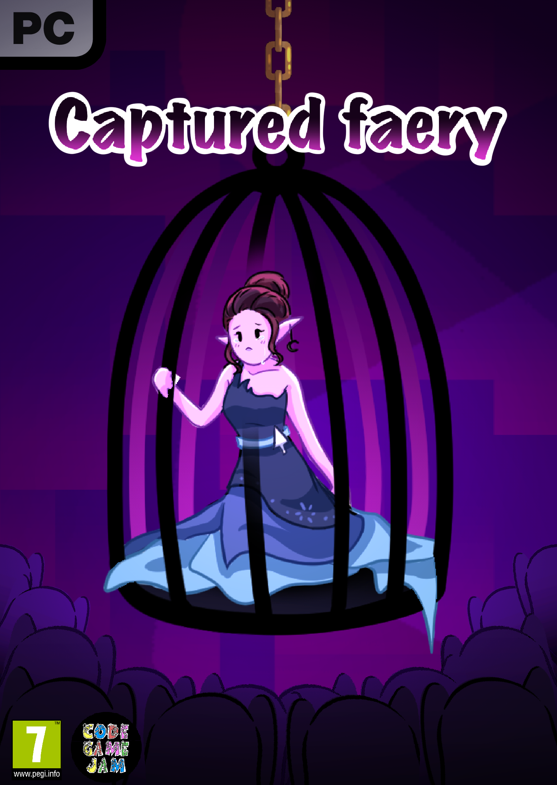
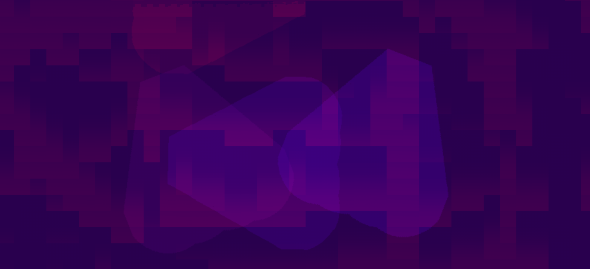

Plus de contenu sera ajouté à cet section ultérieurement
Jeu disponnible sur itch.io

Plus de contenu sera ajouté à cet section ultérieurement
Jeu disponnible sur itch.io
Moteur de jeu : Unity
Outil de partage de code : github
Langage : c#
